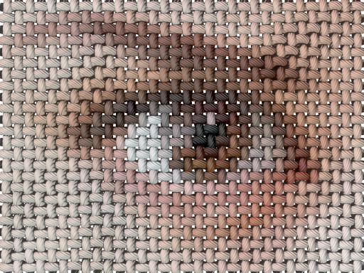

POVRay Thread: Linen and Stitch
Converting 2D image into canvas and cross-stitch 3D simulation
POVRay Thread, a bastardly offspring of POVRay Mosaic project is a set of programs, which read pixels of source image and convert them into a complex 3D structure, simulating something textile and thread related, in POVRay format.
POVRay Thread programs are freely available at GitHub.
Linen...
linen output rendering example
«Linen» is a program for simulating most common plain weave, seen in many cotton, wool, and practically all linen fabrics. Elemental nodes of linen output are colored after source image pixels, producing colored taffeta or print on canvas look.
Resulting POVRay files are easy to edit, globally changing thread finish (dull/shiny) and texture (normal vectors) to simulate wide range of threads, from single strand plastic to multistrand natural fibers.
...and Stitch

stitch output rendering example
«Stitch» is a program for simulating most common cross-stitching embroidery type, i.e. a cross stitch. Each of 3D stitches produced by program is colored after source image pixel. Stitch pattern may be distorted during rendering, turning too regular artificial appearance into something more natural. Distortion is based on structured Perlin noise pattern.
Currently both POVRay Thread programs use one primitive to simulate main object, but this, as any other export settings, may be overwritten. The easiest way to do so is using external "preset.inc" patch files which, upon importing into main scene file, will override all previous settings.
example of rendering using include file with isosurface main object
Now it's time to download POVRay Thread from GitHub and start building your own mosaic scenes.
...or Move back to main page.